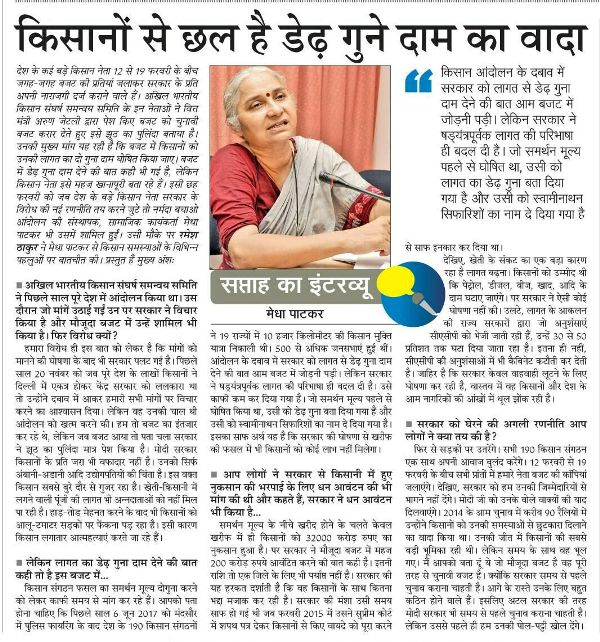
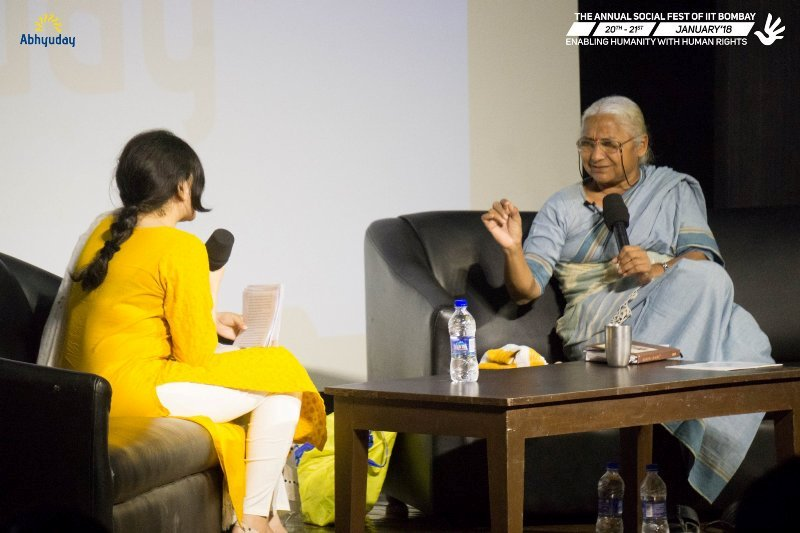
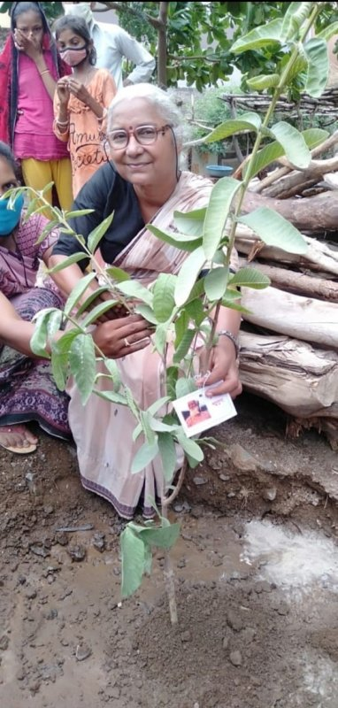

Medha Patkar is an Indian social activist, who advocates against various critical economic and political issues in India. During every movement, several Indian tribals, Dalits, farmers, labourers, and women stand by Medha Patkar while confronting injustice against them. In 1985, the Narmada Bachao Andolan (NBA) movement in three states: Madhya Pradesh, Maharashtra, and Gujarat was started by Medha Patkar. Narmada Bachao Andolan is thirty-two years old people’s movement. Medha Patkar founded another alliance of hundreds of progressive people in India named the National Alliance of People’s Movements (NAPM) in 1992.
Contents
Wiki/Biography
Medha Patkar was born as Medha Khanolkar on Sunday, 1 December 1954 (age 69 years; as of 2023) in Mumbai, Maharashtra. [1]Beyond Pink Her zodiac sign is Sagittarius. She graduated with a bachelor’s degree in science from Ruia College in Mumbai, Maharashtra. She earned an MA in Social Work from Tata Institute of Social Sciences, Mumbai. She studied economic development and how it impacts society in general as part of her PhD from Tata Institute of Social Sciences, Mumbai. She is the alumnus of Tata Institute of Social Sciences (TISS), a multi-campus public research university in Mumbai, India. [2]Hindustan Times
Physical Appearance
Hair Colour: Black
Eye Colour: White
Family
Parents & Siblings
Her father’s name is Vasant Anant Khanolkar. He was a freedom fighter and labour union leader. Her mother’s name is Indumati Khanolkar, who was a gazetted officer in the Post and Telegraphs Department. Medha Patkar has one brother named Mahesh Khanolkar, and he is an architect.
Husband
Medha Patkar was married for about seven years. Her marriage did not last. Later, it ended in an amicable divorce. [3]The Times of India
Address
R/o 6, Prasanna, 11th Road, Christian Colony, Chembur (East), Mumbai 400 071. [4]My Neta
Career
Social Activist
‘Narmada Bachao Andolan Movement’ in 1985
In 1985, Narmada Bachao Andolan (NBA) was initiated by Medha Patkar to brawl for the justice of the displaced residents, when the Narmada Valley Development Project NVDP proposed the construction of thousands of dams on the Narmada river and its tributaries in Madhya Pradesh, India. The construction of the dam was approved by the local government in 1979. Madhya Pradesh government started the Narmada Valley Development Project (NVDP) on 9 August 1985. The states of Madhya Pradesh, Gujarat, and Maharashtra were under a large-scale plan to dam the Narmada river, and its tributaries. A large number of local people were displaced and affected during the construction of this dam in 1985.
Medha Patkar in Mumbai while addressing the displaced residents during Narmada Bachao Aandolan
‘Sardar Sarovar Dam Movement’ in 1987
The construction of the Narmada Sardar Sarovar Dam started in April 1987, and it was regarded as one of the biggest dams in Gujarat on the Narmada river. Reportedly, more than 40,000 families were residing in these submergence areas, and the construction of Sardar Sarovar Dam led to the displacement of these families. The dictatorial planning by the local government of Gujarat over social and environmental displacement was questioned by innocent non-violent people along with Medha Patkar during the construction of the Narmada Sardar Sarovar Dam. In April 1987, Medha Patkar questioned the government of India that if the strategy of constructing dams over the rivers while linking rivers in India was a cure to solve the water shortage in the state. Later, two small hydro projects that were submerged due to the construction of the Sardar Sarovar dam had been re-established by the ‘Narmada Bachao Andolan movement trust.’ Apparently, the rehabilitation and environment protection, health, employment guarantee, Right to Food, and Public Distribution System are some of the sectors where the Narmada Bachao Andolan movement has contributed its services over the last thirty years in India.

Social activist Medha Patkar, along with villagers and dam oustees of Sardar Sarovar dam from Nimad region of Madhya Pradesh, while campaigning against the construction of Sardar Sarovar dam
Jeevanshala – The ‘Life Schools’ in 1992
Jeevanshala – The ‘Life Schools,’ a chain of schools, was started under the leadership of Medha Patkar, in 1992, with about 5,000 students graduated to date. Reportedly, the students in these schools receive athletics training as a major subject, and many of the students from these schools have won various awards at the national level.

Adivasi children while studying at Jeevanshala – The ‘Life Schools’
The National Alliance of People’s Movement in 1992
In 1992, Medha Patkar began ‘The National Alliance of People’s Movements’ (NAPM, an alliance of progressive people in India). The World Commission on Dams, a research institute on the social, political, environmental, and economic aspects and impacts of the development of large dams globally, is also administered by her. The main focal point of NAPM is to solve the issues related to socio-economic justice, political justice, and equity in India. NAPM focuses on facilitating unity and strength in the movements of people in India. This organization seeks just alternatives to fight and question against the oppression of the local government in Gujarat.
Medha Patkar while delivering the speech at The National Alliance of People’s Movement
The Strong People’s Movement in 2005
In 2005, the ‘Strong people’s movement’ was started by Medha Patkar to struggle for the people’s housing rights in Mumbai, India. The government of Maharashtra demolished 75,000 houses of slum-dwellers in Mumbai in 2005. According to residents, the builders in various re-development and rehabilitation projects cheated them. To support the residents, Medha Patkar, in a large public meeting, raised her voice against the demolition of homes at Azaad Maidaan Mumbai, Maharashtra. As a consequence of this mission, the local communities were rebuilt on the same sites with the basic amenities of life including shelter, water, electricity, sanitation, and livelihood.
Nandigram Land Grab Resistance Protest in 2007
Medha Patkar often involves herself in raising her voice to support and attain basic human rights including a fast during Diwali in Kolkata, mass mobilization, complaints at various national forums, particularly in West Bengal state. One of her movements named the ‘Nandigram Land Grab Resistance’ was also just to fight for the basic human right of common people. Medha Patkar fought in the ‘Nandigram land grab resistance’ movement in 2007 with the local people who struggled their lives during West Bengal violence. During this state movement, the’ Nandigram land grab resistance’ movement in West Bengal, Medha Patkar gained the support of various prominent intellectuals and citizens of India.

Medha Patkar delivering a speech at a movement in West Bengal
Hiranandani Land Scam Protest in 2012
In 2012, Medha Patkar blamed the property tycoon Niranjan Hiranandani for building luxury flats instead of affordable houses, and she got registered in a PIL in the High Court of Mumbai along with other activists. In 1986, Hiranandani signed a lease for the 230 acres of land at the rate of Re 1 per hectare. This agreement was signed by Hiranandani with the Mumbai state government and Mumbai Metropolitan Region Development Authority. The amount of the scam was around Rs. 450 billion. While delivering the judgment over the PIL, the Maharashtra High Court judges said,
We appreciate the elegance of the construction and the intent on creating an architecture marvel for the city of Mumbai, we see the specific intent of wholly ignoring the most vital, and perhaps the only, condition in tripartite agreement (to create affordable houses of 40 and 80 sq m).”
In 2012, Niranjan Hiranandani was directed by the state court to build 3,144 houses for the low-income groups.
Koliwada fisher people’s Protest in Mumbai in 2012
Koliwada fisher people, a local community, were forced to vacate their traditional land in Mumbai in 2012. Medha Patkar was arrested for protesting for their rights on 7 June 2012. It was a forced demolition by the local government in Koliwada city of Mumbai. Reportedly, the land was to be provided for a lucrative development project in Mumbai, India.

Medha Patkar before being arrested by the Mumbai Police in 2012 protest against the demolition of Koli Homes in Mumbai
Ghar Bachao Ghar Banao Protest in 2013
In 2013, Medha Patkar, along with more than 500 slum dwellers, set on an indefinite fast to protest against the demolition of 43 houses and displacement of more than 200 people in the Golibar area, Mumbai. The demolition took place on 2nd and 3rd April 2013 in the Golibar area, Mumbai. After the demolition, approximately 50–100 years old communities and thousands of families demanded participatory housing rights during the protest. During the protest, Medha Patkar condemned corruption charges on the builders in the city’s slum rehabilitation scheme. Later, an inquiry was conducted by the local court that gave partial solutions.

Medha Patkar while ending her indefinite fast on the 9th day after an agreement was reached between Ghar Bachao Ghar Banao Andolan and the Government of Maharashtra at Golibar
Lavasa Project Protest in 2013
Medha Patkar protested and fought for the environmental damage in Nagpur, Maharashtra in 2013. Nagpur was the worst-hit farmer suicide city in 2013. She filed a PIL in Supreme Court against the Lavasa project along with the local villagers. Reportedly, P. Sainath (an Indian journalist and author) earlier condemned the Lavasa Project for its inappropriate use of water. Lavasa is a project by Hindustan Construction Corporation in Maharashtra.
Kovvada Nuclear Project’ Protest Andhra Pradesh in 2013
Medha Patkar strongly opposed the land acquisition in Kovvada of Ranasthalam Mandal, Srikakulam district, Andhra Pradesh in 2013. During the protest, Medha argued that in the future, the ecology and the local people would be worst affected by the ‘Kovvada Nuclear project.’

Medha Patkar, along with CPIM and TDP leaders, raised slogans against the nuclear power project at Kovvada in the Srikakulam district, Andhra Pradesh
Sugar-Cooperatives Protest
In 2014, Medha Patkar led a protest to stop the selling of the assets of the ‘Sugar-Cooperative’ industries. Reportedly, the state government had handed over the control of this sector to a few politicians including ten ministers of the Maharashtra cabinet. During the protest, she blamed the government of Maharashtra for selling the properties of the Sugar-Cooperative sector at throwaway rates to the politicians. She further criticized that these politicians were interested in the prime plots of land, old equipment, and machinery of the sugar cooperative mills in Maharashtra. The Girna Sugar factory at Malegaon, Nasik, Maharashtra, and the members of the Chhagan Bhujbal Family were charged by the Supreme court of India under this swindle. For the time being, the local farmers re-occupied and cultivated the unused land of the factory. Earlier, these farmers were the donors of the cooperative land.
Mega Housing Plan Challenge To The Central Government in 2016
In 2016, Medha Patkar challenged the Central and Maharashtra governments by delivering a mega housing plan under which one-crore houses could be provided to slum-dwellers in Mumbai, and she blamed the governments for failing the common people’s demands. She appealed to the government to invite her for presenting the blueprint of her mega plan. She said,
The parties make tall promises before elections, but conveniently forget them after polls. All parties have promised to provide livable shelters in the city before election, but no government has done it so far. Now, we have chalked out a comprehensive plan on how one crore homes could be provided to needy people of the city, who are living in precarious conditions in slums. I appeal to the government to invite us so that we can present the blueprint of our mega housing plan. Respecting the poor class and running the country according to true spirit of Constitution is the best guarantee to establish an egalitarian society in the country.”
‘Kisan Andolan’ in 2020
In 2020, Medha Patkar supported Bharatiya Kisan Union spokesperson, Rakesh Tikait, during the Kisan Andolan. She joined the ongoing protest against the new farm laws at the Ghazipur border in New Delhi, India.

Bharatiya Kisan Union Spokesperson Rakesh Tikait, along with activist Medha Patkar and farmers leaders, during the ongoing protest against the new farm laws, at Ghazipur border in New Delhi
Support to Akhil Bharatiya Kisan Sabha
Medha Patkar often supports ‘Akhil Bharatiya Kisan Sabha’ that was started on 11 April 1936 in Mumbai.

Social activist Medha Patkar participates in ‘Akhil Bharatiya Kisan Sabha’ at Azad Maidan, in Mumbai
Support to Nagrikta Bachao, Desh Bachao
In 2020, Medha Patkar met CPI leader Kanhaiya Kumar, along with Mahatma Gandhi’s great-grandson, Tushar Gandhi, at ‘Nagrikta Bachao, Desh Bachao’ a rally against CAA and NRC, the Constitutional Citizenship amendments in 2019, at Gandhi Maidan in Patna.

CPI leader Kanhaiya Kumar (C) meets social activist Medha Patkar (L) and Mahatma Gandhi’s great-grandson Tushar Gandhi (R), during Anti CAA and NRC rally at Gandhi Maidan in Patna
Politics
Aam Aadmi Party candidature in 2014
Medha Patkar contested as an Aam Aadmai party candidate in the Lok Sabha elections from northeast Mumbai in 2014. Medha Patkar appealed to the people of northeast Mumbai to elect her as their leader through a video.
Medha Patkar formally resigned from AAP in March 2015. She stated that the dismissal or expulsion of Yogendra Yadav and Prashant Bhushan from the party’s national executive (NE) was disappointing. She said that this expulsion was not justifiable, but rather questionable, and condemnable. She said,
I felt sad about the way party leadership is dealing with the serious concerns expressed by Prashant Bhushanji and Yogendra Yadavji. In spite of their contribution over the years towards building the party and its credibility across the country, the way they were treated and also expelled from NE, probably along with Anand Kumar and Professor Ajit Jha, is certainly not justifiable but rather questionable and condemnable.”
Medha Patkar lost in the elections as an Aam Aadmi Party candidate and received only 8.9% of the total votes in the northeast constituency of Mumbai, India.
People’s Political Front Party
Medha Patkar and other members of the National Alliance of People’s Movement initiated a Political Party, ‘People’s Political Front,’ in January 2004, during the World Social Forum, Mumbai.
Support from Rashtriya Seva Dal Party
In 2016, Dr Suresh Khairnar, the General Secretary of the National Executive Committee of Rashtriya Seva Dal, openly announced full support to Medha Patkar and her organizations during the National Convention of the National Alliance of People’s Movement held at Rashtriya Seva Dal, Pune, Maharashtra.
Controversies
Medha Patkar attracted various charges against her under the sections of the Indian Penal Code:
- 2 charges related to Voluntarily causing hurt to deter public servant from his duty (IPC Section-332)
- 1 charge related to House-trespass after preparation for hurt, assault, or wrongful restraint (IPC Section-452)
- 1 charge related to Voluntarily causing hurt by dangerous weapons or means (IPC Section-324
- 1 charge related to criminal intimidation (IPC Section-506)
- 4 charges related to Disobedience to order duly promulgated by a public servant (IPC Section-188)
- 3 charges related to Acts done by several persons in furtherance of common intention (IPC Section-34)
- 3 charges related to Punishment for Rioting (IPC Section-147)
- 3 charges related to Obstructing public servant in discharge of public functions (IPC Section-186)
- 2 charges related to Assault or criminal force to deter public servant from discharge of his duty (IPC Section-353)
- 2 charges related to wrongful restraint (IPC Section-341)
- 2 charges related to Defamation (IPC Section-499)
- 2 charges related to Punishment for Defamation (IPC Section-500)
- 1 charge related to Attempt to commit suicide (IPC Section-309)
- 1 charge related to Being a member of an unlawful assembly (IPC Section-143)
- 1 charge related to voluntarily causing hurt (IPC Section-323)
- 1 charge related to criminal trespass (IPC Section-447)
- 1 charge related to Intentional insult with intent to provoke breach of the peace (IPC Section-504)
- 1 charge related to Rioting, armed with a deadly weapon (IPC Section-148)
- 1 charge related to Every member of unlawful assembly guilty of an offence committed in prosecution of common object (IPC Section-149)
- 1 charge related to House-trespass after preparation for hurt, assault, or wrongful restraint (IPC Section-452)
- 1 charge related to Voluntarily causing hurt by dangerous weapons or means (IPC Section-324)
- 1 charge related to criminal intimidation (IPC Section-506)
- 4 charges related to Disobedience to order duly promulgated by a public servant (IPC Section-188)
- 3 charges related to Acts done by several persons in furtherance of common intention (IPC Section-34)
- 3 charges related to Punishment for Rioting (IPC Section-147)
- 3 charges related to Obstructing public servant in discharge of public functions (IPC Section-186)
- 2 charges related to Assault or criminal force to deter public servant from discharge of his duty (IPC Section-353)
- 2 charges related to wrongful restraint (IPC Section-341)
- 2 charges related to Defamation (IPC Section-499)
- 2 charges related to Punishment for Defamation (IPC Section-500)
- 1 charge related to Attempt to commit suicide (IPC Section-309)
- 1 charge related to Being a member of an unlawful assembly (IPC Section-143)
- 1 charge related to voluntarily causing hurt (IPC Section-323)
- 1 charge related to criminal trespass (IPC Section-447)
- 1 charge related to Intentional insult with intent to provoke breach of the peace (IPC Section-504)
- 1 charge related to Rioting, armed with a deadly weapon (IPC Section-148)
- 1 charge related to Every member of unlawful assembly guilty of an offence committed in prosecution of common object (IPC Section-149)
- 1 charge related to House-trespass after preparation for hurt, assault, or wrongful restraint (IPC Section-452)
- 1 charge related to Voluntarily causing hurt by dangerous weapons or means (IPC Section-324)
- 1 charge related to criminal intimidation (IPC Section-506)
- 4 charges related to Disobedience to order duly promulgated by a public servant (IPC Section-188)
- 3 charges related to Acts done by several persons in furtherance of common intention (IPC Section-34)
- 3 charges related to Punishment for Rioting (IPC Section-147)
- 3 charges related to Obstructing public servant in discharge of public functions (IPC Section-186)
- 2 charges related to Assault or criminal force to deter public servant from discharge of his duty (IPC Section-353)
- 2 charges related to wrongful restraint (IPC Section-341)
- 2 charges related to Defamation (IPC Section-499)
- 2 charges related to Punishment for Defamation (IPC Section-500)
- 1 charge related to Attempt to commit suicide (IPC Section-309)
- 1 charge related to Being a member of an unlawful assembly (IPC Section-143)
- 1 charge related to voluntarily causing hurt (IPC Section-323)
- 1 charge related to criminal trespass (IPC Section-447)
- 1 charge related to Intentional insult with intent to provoke breach of the peace (IPC Section-504)
- 1 charge related to Rioting, armed with a deadly weapon (IPC Section-148)
- 1 charge related to Every member of unlawful assembly guilty of an offence committed in prosecution of common object (IPC Section-149)
Awards, Honours, Achievements
- 1991: Right Livelihood Award
- 1992: Goldman Environment Award
- 1995: Green Ribbon Award for Best International Political Campaigner by BBC, England
- 1999: Human Rights Defender’s Award from Amnesty International, Germany
- 1999: M.A. Thomas National Human Rights Award from Vigil India Movement

The Board of Vigil India Movement conferred on Medha Patkar the M A Thomas National Human Rights Award in 1999
- 1999: Person of The Year by BBC
- 1999: Deena Nath Mangeshkar Award
- 1999: Kundal Lal Award for Peace
- 1999: Mahatma Phule Award
- 2001: Basavashree Award
- 2013: Matoshree Bhimabai Ambedkar Award
- 2014: Mother Teresa Award for Social Justice
Net Worth
Medha Patkar’s approximate net worth as of 2014 was Rs 2,09,226. [5]India Today
Facts/Trivia
- She also goes by the name Medha Tai. [6]The Logical Indian
- Medha Patkar’s mother told in an interview that Medha could not resist sweets.
- The beginning of the ‘Narmada Bachao Aandolan’ movement in 1985 attracted many farmers, Adivasis, farmers, fish workers, labourers, and other local people to fight against the demolition of the local possessions. Various eminent Indian thinkers including environmentalists, human rights activists, scientists, academicians, artists participated in this movement to support the noble cause.
- In an interview, Medha Patkar’s mother revealed that when Medha was studying at the Tata Institute of Social Sciences (TISS), once she finished reading 250 books in only one month.
- In 2006, in an interview, Medha’s mother revealed that when Medha was studying at the Tata Institute of Social Sciences (TISS), Mumbai, she went on a study tour of the Narmada valley in the early 1980s, and Medha was deeply influenced by observing the poor conditions of the displaced people of the Narmada valley, and ever since she was continuously working for the rehabilitation of these displaced people. She said,
She was studying at the Tata Institute of Social Sciences (TISS), Mumbai, and had taken a study tour of the Narmada valley in the early 1980s. The pitiable conditions of the people affected by the dam water in Gujarat that had submerged their villages moved her so much that she took up their cause. She has been fighting for the rights of the displaced people ever since, under her organization named Narmada Bachao Andolan, which has grown into a massive movement over the years. It’s a national coalition of environmental and human rights activists, academics, and project-affected people, working to stop several dam projects in the Narmada valley and fighting for the rehabilitation of all displaced people.”
- In the same interview in 2006, Medha’s mother stated that Medha adored taking part in dramas when she was in school and college, and her mother further stated that Medha was a very talented dancer in her teens. She said,
Medha was a very good dancer and used to draw very well. She used to take part in dramas too. She was a very active child in school and college. All that was long ago…”
- In 2009, Medha Patkar was criticized by various social activists and intellectuals in India, when she denied participating in the protest against the construction of the Jaitapur Nuclear Power Project, a nuclear power plant in Madban village in the Ratnagiri district of Maharashtra, India.
- Medha Patkar, while addressing the people in the rally, spoke on the status of ‘Narmada Bachao Andolan’ during the Bhartiya Janta Party governance in India at Jantar Mantar in Delhi, India on 25th June 2014.
- In September 2014, Medha Patkar blamed the Modi governance for providing land in India to the Japanese officials and Chinese presidents who were visiting India. She said,
Why Japanese officials and Chinese presidents are visiting India? Only because, they want the land in the country to be reserved for them. That is what the Modi government is doing. The Bill, which was introduced in the Assembly by the Vasundhara Raje-led BJP government yesterday and taken up for discussion today, would lead to “hurried, hasty and undemocratic grabbing of land” and the situation would be worst than that of British era.”
- The West Bengal Chief Minister Mamata Banerjee was asked to return the land of the local farmers at Singur, West Bengal, by Medha Patkar in 2014. She made an appeal to the West Bengal chief minister under the new Land Acquisition Act.
- Various activists’ movements and ceremonies in India are actively participated by Medha Patkar. Medha attended a campaign in Delhi Martyrs’ Day in 2015. She delivered a speech on the brave soldiers of India, who sacrificed their lives during several wars. Medha Patkar posted a picture of her on her social media account on such an occasion.

Medha Patkar at Shahidi park while celebrating the Shahidi Divas with young activists in Delhi in 2015
- In 2002, a mob thrashed and vandalized the Sabarmati Ashram, and allegedly assaulted Medha Patkar. This incident occurred after the Godhra riots when a peace meeting was going on 7 March 2002 under the leadership of Medha Patkar. In July 2015, Medha Patkar was cross-examined by the defence lawyer in a case related to an alleged assault at the Sabarmati Ashram.
- In 2018, the Minimum Sale Price (MSP) was introduced by the government of India, and Medha protested against it. She appeared in various news channels on television and newspaper interviews to raise a voice against it.

Medha gave a newspaper interview on MSP
- Medha Patkar is a notable public spokesperson and a motivator. She has been presented as a speaker and representative in various farmers’ and poor displaced people rallies in India. At various Indian universities and institutions, she has often seen lecturing and discussing the issues related to farmers and the poor victims with the young generations.

Medha Patkar at IIT Bombay in 2018
- In June 2017, Medha Patkar, Yogendra Yadav, and Swami Agnivesh went to meet the families of farmers who were killed in police firing in Ratlam, Madhya Pradesh. Medha Patkar was arrested and subsequently released by the Madhya Pradesh police along with 30 activists.
- In 2020, at Aligarh Muslim University, Uttar Pradesh, Medha Patkar, along with Irfan Habib and Arfa Khanum Sherwani, attended the public discussions and debates on NRC, CAA, and NPR (The Indian Citizenship (Amendment) Act, 2019).
- Medha often contributes to environmental saving campaigns in India. On 5 June 2021, on World Environment Day, she posted her picture on her social media account while planting a tree.

Medha while planting a tree on World environment day in 2021
- On 10 June 2021, Medha Patkar interacted with a media person, on the Lakshadweep issue in India, on her social media account. She actively operates her social media account and attends live interviews and discussions every other day.
Live Interaction with Medha Patkar (@medhanarmada) on Lakshadweep issue. #SaveLakshadweep https://t.co/mpO3UnDA6d
— AISF (@AISFofficial) June 10, 2021
- Medha Patkar actively participates in several Indian news shows particularly the debates associated with the fight for violence against women in India.

References

{kind=link}
{kind=link}
{kind=link}
{kind=link}
{kind=link}
{kind=link}
{kind=link}